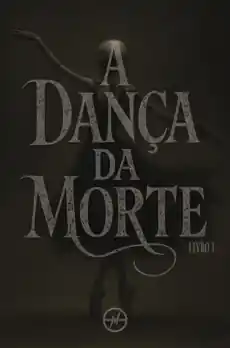

Antologia · Participação literária
A Dança da Morte 1
Sinopse
Antiga como o tempo, silenciosa como o espaço entre dois suspiros, ela observa, paciente, o desabrochar e o fenecer de todas as coisas.
Pode ser ternura ou tormento, consolo ou abismo; veste mil rostos, às vezes sombra, às vezes luz, e caminha entre nós com a leveza de quem nunca realmente irá partir.
O temor dos vivos. O anseio dos exaustos.
A Dança da Morte.
Escolha sua edição
E-book e amostra indisponíveis. A compra do livro físico é realizada na UICLAP.